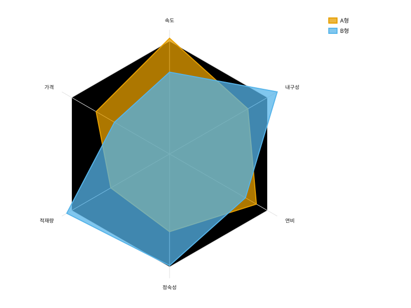
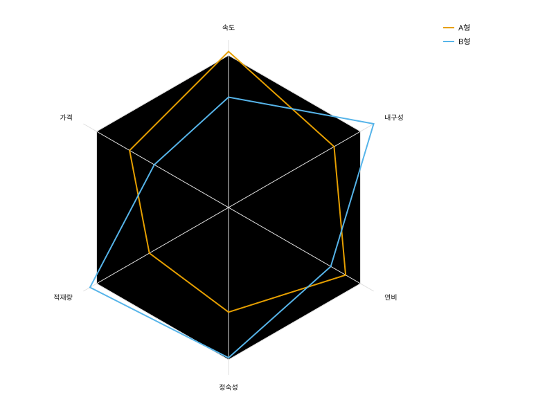

카테고리를 원 둘레의 스포크에 놓고 값을 반지름으로 삼아 닫힌 다각형을 그린다.
import svgplot as sp
_axes = ["속도", "내구성", "연비", "정숙성", "적재량", "가격"]
SPEC = {
"항목": _axes * 2,
"점수": [82.0, 64.0, 71.0, 55.0, 48.0, 60.0, 58.0, 88.0, 62.0, 79.0, 84.0, 45.0],
"모델": ["A형"] * 6 + ["B형"] * 6,
}ONE = {"항목": ["속도", "내구성", "연비", "정숙성", "적재량", "가격"], "점수": [82.0, 64.0, 71.0, 55.0, 48.0, 60.0]}
sp.radarplot(ONE, x="항목", y="점수")
sp.radarplot(SPEC, x="항목", y="점수", hue="모델")
sp.radarplot(SPEC, x="항목", y="점수", hue="모델", fill=False)